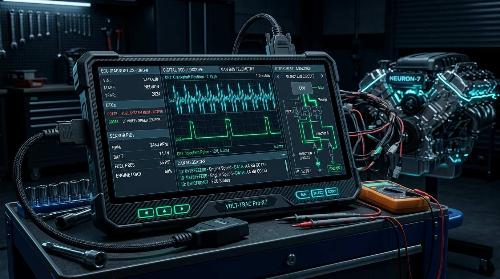

The Hardware-to-Software Philosophy
When an internal combustion engine experiences an intermittent cylinder misfire, jumping straight to replacing injectors is amateur guesswork. A true diagnostician measures short and long-term fuel trims, scopes the crankshaft position (CKP) sensor square wave for missing teeth, and inspects the coil primary saturation ramp time.
I take that identical discipline into software engineering. When an API latency spikes from 35ms to 950ms, I do not randomly tweak config flags. I profile event loops, inspect database query execution plans, isolate kernel network socket backpressure, and verify memory bounds.
Ground stud voltage drops, inductive flyback voltage spikes, CAN transceiver impedance mismatches, and multi-pin harness pin fretting corrosion.
Node.js event loop blocks, unindexed PostgreSQL sequential scans, WebSocket frame starvation, and TCP half-close connection leaks.
Core Diagnostic Competencies
Automotive Circuit Diagram Analysis
Tracing current paths across relay power distribution centers, multi-pin harness pinouts, fuse blocks, and chassis ground impedance bonding points.
OBD-II & ECU Diagnostic Scanning
Real-time streaming of live sensor Parameter IDs (PIDs), freeze-frame capture analysis, fuel trim stoichiometric deviations, and Diagnostic Trouble Codes (DTCs).
CAN Bus Differential Network Integrity
Measuring 120Ω dual termination split resistance (60Ω bus equilibrium), detecting recessive-to-dominant bit distortions with digital storage oscilloscopes.
Cars Only Academy Certified Diagnostician
Accredited professional certification in modern automotive electronic systems, vehicle ECU diagnosis, and complex wiring harness fault recovery.